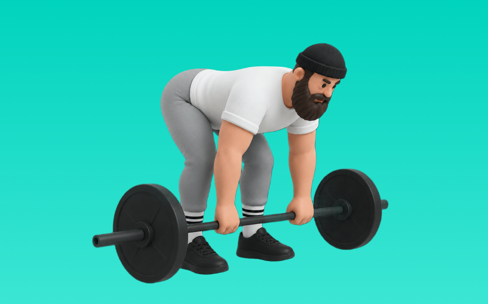

ペンドレイロウ

ペンドレイロウとは、バーベルを使って「引く」動作で背中（広背筋、僧帽筋、菱形筋）＋腕（上腕二頭筋）を鍛える種目です。高重量を扱いやすく、筋力を伸ばしやすいのが特徴で、体幹を固め、みぞおち付近へ引いて戻す動作を繰り返します。背中の厚み・広がり作りや姿勢改善が期待できます。
- 対象部位
- 背中
- 器具
- バーベル
- 記録形式
- 重量・回数
- 別名
- ペンドレー
YouTube動画
-
ペンドレイロウ簡単解説【Pendlay row】
-
【背中トレ】ペンドレイローの正しいやり方 | ベントオーバーローよりも効果的！？【ビーレジェンド プロテイン】
-
【ペンドレーロウ】体幹部と背中を強化するバーベルトレーニングのやり方
-
【バーベルロウ】正しいやり方とよくあるエラー【ペンドレイロー / ベントオーバーロー】
-
【背中トレ】BIG3を底上げする『ペンドレイロー』のやり方を解説！
-
荷重懸垂とペンドレイロウ
-
バーベルロウは時間の無駄？【筋トレ】
-
Pendlay Rows - Tutorial
-
筋トレ初心者は絶対にベントオーバーローだけはやめろ！！！怪我するよ
-
ペンドレーロウで背中の筋力をアップする Pendlay row
-
How to Perform the Pendlay Row - Exercise Tutorial
-
How to Perform a Pendlay Row
-
PENDLAY ROW GUIDE | Form, Benefits, and Mistakes to Avoid
-
【筋トレ】より広背筋に効かせる ベントオーバーローのやり方 | ボディビルチャンピオンが解説【ビーレジェンド プロテイン】
-
Pendlay Rows | How To Perform Them Correctly
-
【背中強化】全パワーリフターやるべき‼︎超おすすめ補助種目‼︎
YouTubeショート
-
ベントオーバーロウの正しいやり方〜3つのポイント〜 #筋トレ #フィットネス
-
正しいベントオーバーロウのやり方
-
【筋トレ初心者必見 ! |バーベルロー(ベントオーバーロー)のやり方】日本人初ミスター・オリンピアに出場した、山岸プロが解説！ #山岸秀匡 #筋トレ初心者 #バーベルロー 続きはコメ欄から!
-
懸垂が劇的に軽くなる「背中の連動」3ステップ #筋トレ #懸垂 #背中トレ
-
How To Do A Pendlay Row (Correct Form)
-
みなさんはベントオーバーローやってますか？持田選手がしっかり広背筋に効くトレーニングをレクチャーしてくれました！#volix #背中トレ #ちょこっとおしい #広背筋 #volixgear
-
Pendlay Row
-
How to Do a Pendlay Row
-
全身の筋肉を"大きく強く"するための5つの種目！#shorts #筋トレ #トレーニング
-
【どっちが良いの？】ベントオーバーローで背中を鍛え分けるグリップ #僧帽筋 #広背筋
-
How To Do A Barbell Bent-Over Row (Correct Form)
-
持田選手に2種類のデッドリフトについてレクチャーしていてもらいました！次はどの種目の解説をやってほしいかコメントしてね！#筋トレ #volix #トレーニング #ちょこっと惜しい
-
ダンベルだけで背中をデカくする筋トレ💪
-
ペンドレイロウ 82.5kg 10reps
-
俺みたいなデカイ背中を作るオススメトレ5選！#shorts
-
背中が鬼になる3種目をガチで教えます。#shorts
-
デレクの巨大すぎる背中 【世界の筋肉】
-
Pendlay Row ペンドレイロウ 槓鈴划船 70 KG
-
ペンドレイロウイング
-
【 筋トレ動画 】ペンドレイローイング #筋トレ #pendlayrow #背中トレ #shorts
-
PendlayRow ペンドレイロール 100KG 220LB
-
How To Do A Pendlay Row
-
筋トレでこれ使うと世界が変わります #shorts
-
かっこいい背中を作る背中トレティアリスト#shorts #youtubeshorts #筋トレ大学 #筋肉博士#ティアリスト#ティアキン #tierlist #背中トレ#山本義徳
-
ペンドレイロウ 背中トレ
-
【平良海馬】どんな筋トレすれば球速上がる？【2023/10/28】
-
意味のない筋トレTOP３ #shorts #筋トレ #タケタコタン渾身の演技披露
-
バチバチに背中に効くチェストサポートロウのやり方！フォーム
-
時間がない時の肩トレはコレだ！ #筋トレ
-
🚨スミスベントオーバーロウで背中変わらん人、ほぼこれやってます。#背中トレ #朝トレ #筋トレ #筋トレ初心者
-
【 筋トレ動画 】ペンドレイローイング #筋トレ #pendlayrow #背中トレ #shorts
-
【Training】Pendlay Row #shorts #back #背中
-
背中をデカくする必須種目【デッドリフト】#筋トレ #背中トレ #パーソナルトレーナー
動作方法
- 体幹を安定させ、背中が丸まらない姿勢を作る
- 肘を後方へ引き、肩甲骨を寄せる
- 勢いを使わず、ゆっくり戻す
動作ポイント
- 背中を丸めない
- 首に力を入れすぎない
- 戻しを速くしすぎない
ワンポイントアドバイス
- 腕ではなく背中で引く感覚を優先する
- 反動が増えたら重量を一段下げる
目的別回数設定
目的や体力に応じた一般的な目安です。無理のない範囲で調整してください。
- 筋力アップ
- 1〜5回
- 筋肥大
- 6〜12回
- 持久力アップ
- 13〜20回
YouTube動画について
動画はYouTubeの公開情報をもとに表示しています。内容は投稿者によるもので、Biggrによる監修ではありません。
アプリを入手
筋トレやトレーニングの記録はBiggrにお任せください。今すぐ無料で使い始められます。